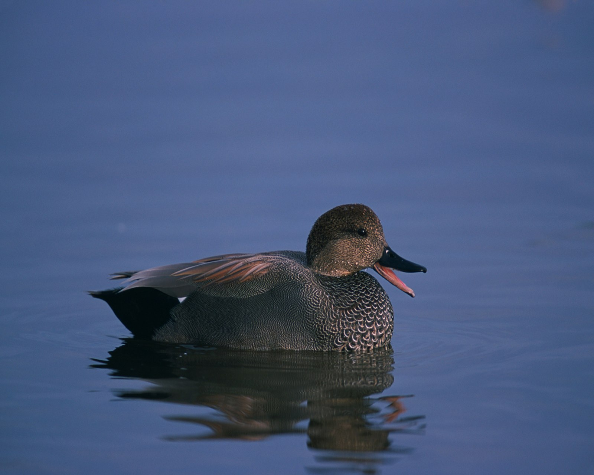

Mareca strepera — بطة سطحية ذات رقعة جناحية بيضاء
الهوية والاسم
البط السماري، ويَرِد أيضًا باسم «سمارية» في مراجع عربية، نوع من البطيات Anatidae ورتبة الإوزيات Anseriformes. اسمه العلمي المعتمد هنا Mareca strepera؛ وتستخدم مراجع أقدم وبعض القوائم الإقليمية الاسم Anas strepera للنوع نفسه. وهو من البط السطحي التغذية، وليس من البط الغواص الذي يعتمد عادة على النزول الكامل تحت الماء. وقد يبدو الذكر باهتًا من بعيد، لكن الاقتراب البصري بالمنظار يكشف نقشًا دقيقًا لا لونًا رماديًا موحدًا.
علامات التعرف
الذكر في ريشه المميز رمادي بني، ذو خطوط دقيقة على الجسم ومؤخرة سوداء ومنقار داكن. تظهر على الجناح مساحة بيضاء، ومعها درجات سوداء وكستنائية عند النظر جيدًا. الرأس مرتفع الجبهة، والجسم أنحف قليلًا من الخضاري. الأنثى بنية مرقطة، ومنقارها داكن تحفه حواف برتقالية؛ وتظهر رقعة الجناح البيضاء عند الطيران وقد تُرى أثناء الراحة.
تشبه اليافعات الأنثى، فلا يكفي غياب اللون الرمادي للحكم على الجنس أو العمر. كما يمر الذكر بعد التكاثر بريش كسوف يشبه ريش الأنثى. تساعد الرقعة الجناحية البيضاء والمنقار الأنحف والبطن الفاتح في تمييزه من الخضاري؛ والأفضل جمع هذه العلامات بدل الاعتماد على لون واحد أو صورة بعيدة.
الموائل والغذاء
يرتبط بالبحيرات والبرك والمستنقعات الغنية بالنباتات المائية، ويستخدم مياهًا عذبة وأحيانًا قليلة الملوحة، طبيعية أو اصطناعية. يتغذى غالبًا قرب السطح، ويميل بجسمه إلى الأمام للوصول إلى النباتات المغمورة. الأوراق والسيقان والبذور جزء مهم من غذائه، وتزداد أهمية اللافقاريات، ومنها الحشرات والرخويات الصغيرة، في فترة التكاثر. وقد ينتزع نباتات جمعتها طيور أخرى، مثل الغرة والبط الغواص، عندما تصعد إلى السطح.
السلوك ودورة الحياة
يختلط بأنواع بط أخرى ويكوّن أسرابًا خارج التكاثر، وقد تظهر الأزواج منذ الخريف والشتاء. تبني الأنثى عشًا أرضيًا تخفيه النباتات، وتبطنه بمواد نباتية وزغب؛ وتوفر الجزر الصغيرة أحيانًا مواضع مناسبة. تسجل بيانات BTO حضنة نموذجية من 9–11 بيضة، تحضنها الأنثى نحو 24–26 يومًا. تخرج الفراخ مكسوة بالزغب وقادرة على الحركة، وتصبح قادرة على الطيران عادة بعد نحو 45–50 يومًا. هذه مدد مرجعية، وليست تقويمًا موحدًا لجميع الجماعات.
الانتشار والهجرة
يمتد انتشاره التكاثري عبر أجزاء واسعة من أمريكا الشمالية وأوروبا وآسيا، مع تكاثر محلي في شمال غربي أفريقيا. تهاجر جماعات الشمال بقوة، بينما تقيم جماعات أخرى أو تتحرك مسافات أقصر. وفي أوروبا تمر الطيور بفترة تبديل ريش الجناح بعد التكاثر تفقد خلالها القدرة على الطيران مؤقتًا، ثم تواصل حركتها. لهذا لا يعني وجود طائر في الصيف وحده أنه مقيم دائم أو يعشش في الموقع.
حضوره في البلدان العربية
يوثق دليل الطيور المائية لشمال أفريقيا وجودًا شتويًا في المغرب والجزائر وتونس وليبيا ومصر والسودان، ولا يعمم ذلك على موريتانيا. وهذه إشارة إلى الانتشار، لا إلى وفرة متساوية في كل بلد أو كل منطقة رطبة. وفي لبنان تصفه قائمة 2020 بأنه زائر شتوي شديد القلة وغير منتظم، من أواخر أكتوبر إلى منتصف مارس.
في الكويت هو عابر غير شائع وزائر شتوي قليل، وقد سُجل تكاثره؛ لذلك لا يصح نفي التعشيش عنه في المنطقة كلها. وفي عُمان يُعد زائرًا شتويًا شائعًا نسبيًا. أما الإمارات فتصفه قائمتها بأنه عابر وزائر شتوي تتراوح وفرته من غير شائع إلى شائع نسبيًا، لكنه نادرًا ما يكون كثير العدد. وتوثق سجلات الظهران السعودية زيارة شتوية غير شائعة خلال أكتوبر–مارس؛ وهذه ملاحظة محلية، لا حكم على المملكة كلها.
لماذا أواخر أكتوبر؟
تتزامن هذه الفترة مع جانب من الحركة الخريفية للنوع؛ وفي لبنان تبدأ نافذة وجوده الشتوي الموثقة في أواخر الشهر. لكنها لا تمثل ذروة موحدة للعالم العربي، ولا تضمن ظهوره في كل بحيرة. يفيد تسجيل التاريخ والعدد وحالة المياه، مع مراقبة هادئة لا تضطر الطيور إلى قطع التغذية أو ترك مكان الراحة.
الحفظ والضغوط
يصنفه تقييم القائمة الحمراء العالمي لعام 2025 ضمن «أقل قلقًا» LC. لا تعني هذه الفئة غياب المشكلات المحلية: يذكر التقييم تلوث المياه وإزعاج الأنشطة الترفيهية، والصيد عبر أجزاء واسعة من نطاقه، والتسمم بابتلاع الرصاص في إسبانيا. حماية الغطاء النباتي ومواقع التغذية والتعشيش والمبيت تدعم استمرار وجوده، ولا تغني وفرة النوع عالميًا عن متابعة حالته في كل بلد.
المراجع
BirdLife International / القائمة الحمراء للاتحاد الدولي لحفظ الطبيعة، تقييم 2025؛ BTO BirdFacts؛ Cornell Lab of Ornithology؛ U.S. Fish & Wildlife Service؛ Smithsonian؛ EURING/CMS، أطلس الهجرة؛ دليل الطيور المائية لشمال أفريقيا، AAO وONCFS؛ قائمة طيور الكويت الرسمية؛ Birds of Oman؛ قائمة الإمارات EBRC، يوليو 2026؛ قائمة طيور لبنان، Sandgrouse 42، 2020؛ Birds of Saudi Arabia، قائمة الظهران. مراجعة المعلومات: 26 أكتوبر 2026.
الصورة: Gary Kramer / USFWS — Public Domain.